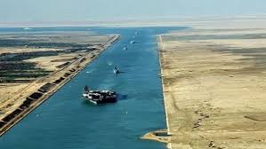
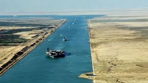

The Suez Canal is an artificial sea-level waterway in Egypt, connecting the Mediterranean Sea to the Red Sea through the Isthmus of Suez. It was constructed by the Suez Canal Company between 1859 and 1869, after 10 years of construction, it was officially opened on November 17, 1869. The canal offers watercraft a shorter journey between the North Atlantic and northern Indian oceans via the Mediterranean and Red seas by avoiding the South Atlantic and southern Indian oceans, in turn reducing the journey by approximately 7,000 kilometres (4,300 mi). It extends from the northern terminus of Port Said to the southern terminus of Port Tewfik at the city of Suez. Its length is 193.30 km (120.11 mi), including its northern and southern access channels. In 2012, 17,225 vessels traversed the canal (47 per day). The canal is a single-lane waterway with passing locations in the Ballah Bypass and the Great Bitter Lake. It contains no locks system, with seawater flowing freely through it. In general, the canal north of the Bitter Lakes flows north in winter and south in summer. South of the lakes, the current changes with the tide at Suez.
The canal is owned and maintained by the Suez Canal Authority[4] (SCA) of Egypt. Under the Convention of Constantinople, it may be used "in time of war as in time of peace, by every vessel of commerce or of war, without distinction of flag.
In August 2014, construction was launched to expand and widen the Ballah Bypass for 35 km (22 mi) to speed the canal's transit time. The expansion was planned to double the capacity of the Suez Canal from 49 to 97 ships a day.[6] At a cost of $8.4 billion, this project was funded with interest-bearing investment certificates issued exclusively to Egyptian entities and individuals. The "New Suez Canal", as the expansion was dubbed, was opened with great fanfare in a ceremony on 6 August 2015.[7] On 24 February 2016, the Suez Canal Authority officially opened the new side channel. This side channel, located at the northern side of the east extension of the Suez Canal, will serve East Terminal for berthing and unberthing vessels from the terminal anytime of day and night. East Container Terminal is located in the Suez Canal itself; before constructing the new side channel, as long as the Suez Canal convoy was running, there was no chance for vessels to berth or unberth at East Terminal.
 
